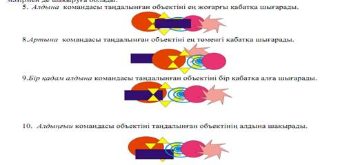
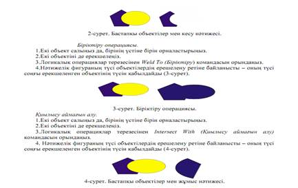
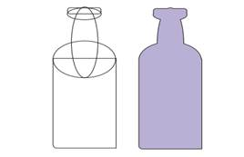

Сабақтың мақсаты: Күрделі объектілерді біріктіру тәсілдерімен таныстыру.
Қажетті материалдар мен жабдықтар: ДЭЕМ, тәжірибелік сабақтарды орындауға нұсқаулықтар, тақта, бейне проектор.
Жұмыстың мазмұны мен орындалу реті:
1. Тапсырмаларды орындау мысалдарын қарастыру
2. Ретімен берілген тапсырмаларды орындау
3. Тәжірибелік жұмысты талапқа сай орындап тапсыру
Теориялық бөлім:
CorelDraw-да объектілерді реттестірудің мынадай түрлері бар: басқа объектіге салыстырмалы реттестіру, бірінің үстінде бірі орналасқан объектілерде сурет бетіне шығу тізбесін өзгерту, топтасу және объектілерді біріктіру. Ол үшін қажетті командалардың бәрі Arrange (монтаж) мәзірінің ішінде орналасқан. Объектілердің тізбегін өзгертетін жеті команда бар:
Ол Arrange-Order (рет) командасы арқылы шақырылады. Бұл командалар: алдына шығару, артына шығару, алға, артқа, тізімді бастапқы қалпына келтіру, объект алдына, объектіден кейін объектілерді топтау және топталған объектілерді бастапқы қалпына келтіру.
Бірнеше объектілерді бір топқа біріктіру үшін, алдын ала ол объектілерді жоғарыда айтылған тәсілдердің бірімен белгілеу керек. Содан соң Arrange-Group (топтастыру) командасын орындау керек. Осы топталған объектіні қайтадан бастапқы қалпына келтіру үшін Ungroup (топты жою) командасын орындау қажет. Топтастыру мен біріктіуден басқа екі немесе бірнеше объектілерден бір объекті немесе бірнеше жаңа объекілер алудың үш тәсілі бар. Бұлар: біріктіру, қиылыстыру және шегеріп тастау.
Біріктіру. Бұл операция орындағанда бірнеше объектілер бір контурмен қоршалып, араларындағы бастапқы объектілер контурлары жойылады да, бір объект болып шығады.
Қиылыстыру. Бұл операция нәтижесінде екі немесе бірнеше объектілердің қиылысуында пайда болған объект шығады.
Шегеріп тастау. Бұл операция орындалу барысында таңдалынған объектінің белгіленген объектімен кесілген бөліктері жойылады.
Тапсырмалар:
1 тапсырма. Объектілерді бір-біріне салыстырмалы түрде орналастыру.
1. 1-суретте көрсетілгендей бірнеше объект құрып, оларды салыстырмалы түрде орналастыруға тырысыңыз.
1-сурет. Объектілерді бір-біріне салыстырмалы түрде орналастыру.
2. Суретте ең төменде орналасқан объект тіктөртбұрыш, ал ең жоғарыда орналасқан объект жұлдызша. Үнсіз келісім бойынша объектілер, олардың құрылу ретіне сай орналасады. Яғни ең жоғарғы объект соңғы құрылған объект болып табылады.
3. Егер объектілердің оналасу ретін өзгерту керек болса, Жинақтау→ Реті мәзірін қолдану керек.
4. Дәл сол мәзірді тышқанның оң жақ батырмасымен басып шақырылған констекстік
мәзірмен де шақыруға болады.

2 тапсырма. Бірнеше объектілермен операциялар орындаңыз.
Кесіп алу.
1. Екі объект салыңыз да, бірінің үстіне бірін орналастырыңыз.
2. Алдымен кесілетін объектіні ерекшелеңіз, содан соң shift пернесін басып тұрып
кесетін оъектіні белгілеңіз.
3. Логикалық операциялар терезесінен Trim (Кесіп алу) командасын орындаңыз (2-
сурет).

3 тапсырма. Күрделі объектілерді біріктіру тәсілдері бойынша бөтелке формасын алыңыздар.
